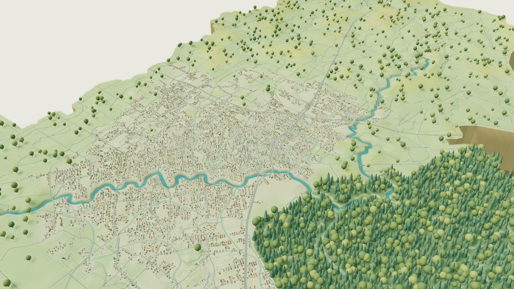

ElSaadani et al. · NHESS 2026
One watershed.
Different design storms.
Where the rain falls changes who gets flooded.
Explore how the spatial pattern of design rainfall changes modeled flood exposure and building damage in Louisiana’s Vermilion River Basin.

LOUISIANA · VERMILION RIVER BASINEnter the interactive landscape ↗Start with the story
A short film introduces design storms, the comparison, and the findings.
Follow the rainfall
Compare the uniform Atlas 14 design storm with three spatial SST examples.
Explore the consequences
Look at flood depth, inundated-building clusters, and height above drainage.
The study, in a few minutes
Why the design storm matters.
From the rainfall assumption to flood exposure and structural damage.
Explore the chapters
Now explore the maps yourself.
Choose a map and a scenario, then move between the basin and its neighborhoods.
About this module
Research you can explore.
This module accompanies Effect of Design Storm Characterization on Flood Exposure and Structure Damage Estimates. It presents study results using an illustrative 3D landscape.
The three SST examples are individual storms. SSTmax combines the greatest flood depth at each location across all 50 SST simulations; it is an ensemble envelope, not a single event. HAND describes height above the connected drainage channel, not flood depth.
Rainfall, flood, cluster, and HAND layers: study data. Terrain and buildings: illustrative. Roads © OpenStreetMap contributors. Film includes AI narration; study chart by the authors, CC BY 4.0.